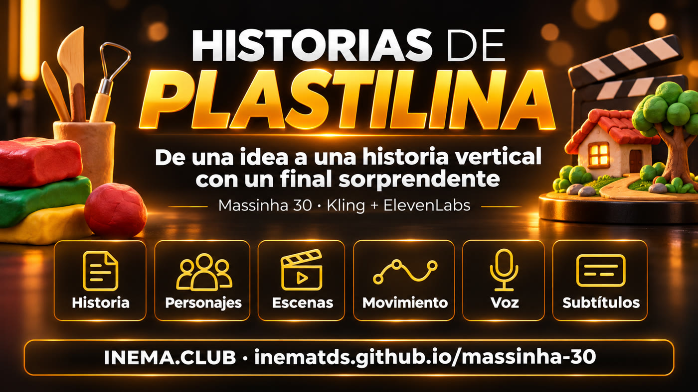

1
Algo desaparece
Lia se da cuenta de que sus retazos están desapareciendo. Un problema pequeño, visible y fácil de seguir.
¿Quieres contar una historia, pero pierdes tiempo intentando que los personajes, las escenas y la voz encajen? Massinha 30 es el kit reutilizable para que los creadores transformen una idea en una película de plastilina de 30 segundos.
Tienes una idea para una historia, pero lograr que los personajes, la voz y las escenas encajen lleva trabajo. Massinha 30 es un kit para crear narraciones cortas con aspecto de plastilina artesanal. Organiza el guion aprobado, las referencias de los personajes, los clips generados en Kling, la narración de ElevenLabs y los subtítulos. Está pensado para creadores que quieren repetir el proceso con nuevas historias. Para producir, hace falta tener acceso a los servicios de generación; la guía se puede leer gratis.

Demostración producida con imágenes de referencia de Codex, seis clips de Kling y narración de ElevenLabs. Los subtítulos y los cambios de escena siguen los tiempos reales de la voz. Audio en portugués; traducción textual de la guía al inglés y al español.
Descargar MP4 · Versión sin subtítulos · Descargar proyecto editable
Créditos de audio: “Carefree” — Kevin MacLeod (incompetech.com), CC BY 4.0. “Réveil des oiseaux” — Joseph Sardin / BigSoundBank, CC0.
Primero mostramos algo concreto. Después, el personaje lo interpreta mal. La revelación cambia su reacción, sin necesidad de terminar con una moraleja.
Lia se da cuenta de que sus retazos están desapareciendo. Un problema pequeño, visible y fácil de seguir.
Un pajarito se lleva la tela. Lia va a reclamar. La acción hace avanzar la historia.
La tela abriga a unas crías en un nido mojado. Lia decide ayudar. El final ocurre en un gesto.
Este es el guion propuesto de El ladrón de retazos, una historia original. La producción solo empieza después de aprobar las palabras que se dirán.
Una ficha fija la apariencia de los personajes. Cada imagen individual se convierte en un clip corto. La narración se genera por separado y los subtítulos siguen los tiempos reales de la voz. Los personajes actúan en silencio: este flujo no incluye sincronización labial.
Registro de la aprobación, envío de una escena a Kling, voz con tiempos por carácter, subtítulos, montaje y comprobación técnica.
La historia, las imágenes generadas con el agente, la continuidad, la descarga de los clips, la procedencia de los sonidos, la pronunciación y el resultado completo con audio.
No necesitas esta parte para entender lo anterior.
Una skill es una carpeta de instrucciones que sigue el agente. CLI significa programa usado en la terminal. FFmpeg se encarga de la edición; libass es el componente que renderiza los subtítulos.
En Ubuntu/Debian, instala los programas de abajo. En Windows/macOS, instala Python 3, Git, Node.js LTS y FFmpeg desde sus sitios oficiales; los siguientes comandos parten de una terminal con estos programas disponibles.
sudo apt update sudo apt install python3 ffmpeg git nodejs npm npm install -g @openai/codex @klingai/cli-global codex login kling login ffmpeg -filters | grep subtitles
El último comando debe mostrar el filtro subtitles. Si no aparece, instala una distribución de FFmpeg con libass. El inicio de sesión de Codex debe usar tu suscripción. El inicio de sesión de Kling abre la autorización de la cuenta. El kit no ofrece créditos de generación.
Python 3.10 o posterior; FFmpeg y ffprobe con soporte para subtítulos libass; la CLI oficial de Kling autenticada y con créditos; una voz habilitada y una clave de ElevenLabs en un archivo privado. Las imágenes se crean con image_gen mediante la suscripción del agente. No hay ningún modelo de video que instalar en el servidor.
python3 --version ffmpeg -version ffprobe -version kling who_am_i
git clone https://github.com/inematds/massinha-30.git cd massinha-30 python3 -m unittest discover -s tests -v
Abre la carpeta en Codex y pide: “Usa skills/massinha-30/SKILL.md para crear una nueva historia de plastilina”. La skill viene con el proyecto; no hace falta cambiar las skills globales.
python3 skills/massinha-30/scripts/pipeline.py iniciar exemplos/retalhos.json --out runs/retalhos
Edita las seis escenas del ejemplo antes de iniciar una historia diferente. El archivo narracao.txt muestra todo el texto. Tras una respuesta explícita que apruebe las palabras, registra la respuesta real:
python3 skills/massinha-30/scripts/pipeline.py aprovar runs/retalhos --evidencia "Apruebo el guion"
No ejecutes la aprobación como una simple parte de la instalación. Cambiar el guion invalida la aprobación.
Pídele al agente las fichas de personajes y seis imágenes individuales. Guarda de 01.png a 06.png en runs/retalhos. No uses una cuadrícula de storyboard como primer fotograma. Ensaya el comando de abajo sin --enviar; añade esa opción para generar una escena de cinco segundos.
python3 skills/massinha-30/scripts/pipeline.py kling runs/retalhos --cena 1 --imagem runs/retalhos/01.png
Repite para las seis escenas. Abre runs/retalhos/kling-01.json y busca generation_id en la respuesta stdout. Consulta con kling query_tasks seguido de ese ID. Cuando termine, el resultado incluye una URL de video en works. Abre esa URL en el navegador, guarda el video como 01.mp4 en la carpeta runs/retalhos y repite hasta 06.mp4. En la máquina INEMA, la descarga usa inemavox; en otra computadora, guardar desde el navegador evita necesitar esa herramienta. Las instrucciones completas están en el archivo references/producao.md dentro de la skill.
En tu cuenta de ElevenLabs, crea una clave en la sección de desarrolladores/API keys y copia el ID de la voz elegida en la biblioteca de voces. Una variable de entorno es un valor privado que lee el programa. Guarda estos dos valores en un archivo .env fuera de la carpeta del proyecto, uno por línea: ELEVENLABS_API_KEY= seguido de la clave y ELEVENLABS_VOICE_ID= seguido del ID, sin publicar ese archivo. El comando de abajo es un ensayo: no realiza llamadas externas ni consume créditos. Añade --env-file con tu archivo privado y --enviar para generar.
python3 skills/massinha-30/scripts/pipeline.py voz runs/retalhos
Para una nueva toma cuando la voz quede demasiado larga, mantén el mismo guion aprobado y ejecuta el comando de voz con --tomada 2 --velocidade 1.1, además de las opciones de envío y archivo privado. Hay hasta tres tomas (1, 2 y 3), cada una cobrada por el proveedor; los audios anteriores se conservan. No cambies el número para repetir un envío cuyo resultado aún sea incierto: primero consulta el historial de la cuenta. Si aún no cabe, inicia otra producción con un texto más corto y obtén la aprobación de las nuevas palabras. La voz usa eleven_multilingual_v2; la API devuelve los tiempos utilizados en los subtítulos. Fish es una alternativa posible, pero este kit no tiene un adaptador implementado. Agnes tampoco tiene adaptador en este proyecto.
Con los seis clips, la narración y los subtítulos en la carpeta, monta el primer corte. Para incluir música y efectos descargados mediante inemavox, añade --musica y --efeitos con sus respectivas rutas. Registra la fuente y la licencia en fontes-audio.md.
python3 skills/massinha-30/scripts/pipeline.py montar runs/retalhos --ritmo-voz python3 skills/massinha-30/scripts/pipeline.py validar runs/retalhos/final.mp4
Archivos de salida: limpo.mp4, final.mp4 y legendas.srt. Exporta en 720×1280, 30 fps, H.264/AAC y 30 segundos. Si la narración supera los 29,5 segundos, ajusta la interpretación o aprueba una versión más corta. Mira la película completa con sonido: el validador técnico no comprueba la continuidad ni la pronunciación.
Vídeo final de 30 segundos, 720×1280, 30 fps y H.264/AAC. La narración de 27,43 segundos se comprobó con una transcripción independiente, que coincidió con el guion aprobado. La revisión visual detectó un movimiento invertido en el plano del nido; ese clip se corrigió antes del montaje. Ocho pruebas locales pasaron. Kling y ElevenLabs se usaron en la producción real.
Para que los cambios de escena sigan la narración, añade --ritmo-voz al comando de montaje. El archivo edicao.json registra las duraciones reales de cada plano.